Modul 8: Klasifikasi Dasar (Pohon Keputusan, Naive Bayes, Regresi Logistik Teratur)
Deskripsi & Kedudukan CRISP-DM: Berada pada tahap Modeling dan Evaluation. Modul ini mengenalkan tiga keluarga model klasifikasi berwatak beda: Pohon Keputusan (membelah ruang fitur secara ortogonal persegi), Naive Bayes (menghitung peluang posterior berbasis teorema Bayes dengan asumsi independensi fitur), dan Regresi Logistik Teratur (pemisah linear dengan penalti Ridge/Lasso via paket glmnet).
1. Landasan Teori & Rumus Kunci
- Kriteria Split: Gini Impurity $I_G(t) = 1 - \sum_{i=1}^C p_i^2$ atau Entropy $H(t) = -\sum p_i \log_2 p_i$.
- Pemangkasan Biaya-Kerumitan (Cost-Complexity Pruning): $$R_\alpha(T) = R(T) + \alpha |T|$$
- Parameter
cp(complexity parameter): Pemotongan cabang hanya diizinkan jika peningkatan kebaikan model melebihi ambangcp. - Aturan 1-SE (One-Standard-Error Rule): Pilih pohon paling sederhana yang skor validasi silangnya berada dalam rentang 1 kesalahan baku dari nilai optimal absolut (mencegah overfit).
- Teorema Bayes: $P(Y=k \mid X) \propto P(Y=k) \prod_{j=1}^p P(X_j \mid Y=k)$.
- Laplace Smoothing: Mencegah probabilitas nol jika suatu kombinasi belum pernah muncul di data latih: $P(x_i \mid y) = \frac{n_{ik} + 1}{n_k + K}$.
- Regresi Logistik Teratur: $\ln\left(\frac{p}{1-p}\right) = \beta_0 + \sum \beta_j X_j$. Penalti Elastic Net: $\lambda \left[ (1-\alpha)\frac{1}{2}\|\beta\|_2^2 + \alpha \|\beta\|_1 \right]$. $\alpha=1$ (Lasso/seleksi fitur), $\alpha=0$ (Ridge/penyusutan koefisien).
2. Dataset Praktikum: data_nasabah.csv
Memuat 1.000 amatan nasabah perbankan dengan target biner gagal_bayar (ya/tidak). Fitur meliputi usia, pendapatan, status kepemilikan rumah, rasio hutang terhadap pendapatan, dan riwayat tunggakan.
3. Sintaks & Alur Kerja R (Paket caret)
library(caret); library(rpart); library(naivebayes); library(glmnet)
# 1. Pembagian Data Latih-Uji Berstrata
set.seed(2025)
idx <- createDataPartition(data$gagal_bayar, p = 0.8, list = FALSE)
latih <- data[idx, ]; uji <- data[-idx, ]
# 2. Skema Validasi Silang 10-Lipat dengan Evaluasi ROC
ctrl <- trainControl(method = "cv", number = 10, classProbs = TRUE,
summaryFunction = twoClassSummary, savePredictions = "final")
# 3. Model Pohon Keputusan & Penalaan cp
grid_tree <- expand.grid(cp = seq(0.001, 0.05, by = 0.005))
m_tree <- train(gagal_bayar ~ ., data = latih, method = "rpart",
metric = "ROC", trControl = ctrl, tuneGrid = grid_tree)
# 4. Membandingkan Model via Resamples
hasil_banding <- resamples(list(Pohon = m_tree, NB = m_nb, Glmnet = m_glm))
bwplot(hasil_banding, metric = "ROC")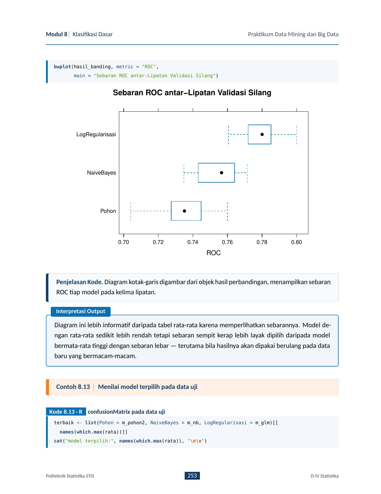
bwplot.Modul 9: Klasifikasi Lanjut (Support Vector Machine, K-Nearest Neighbors, Random Forest)
Deskripsi: Beralih ke model-model yang lebih fleksibel dan berdaya tangkap tinggi: SVM (memaksimalkan margin pemisah dengan fungsi kernel), KNN (pengelompokan berbasis ketetanggaan instan), dan Random Forest (ansambel bagging banyak pohon keputusan dengan keacakan fitur).
1. Landasan Teori Komparatif
| Karakteristik | SVM (Support Vector Machine) | KNN (K-Nearest Neighbors) | Random Forest |
|---|---|---|---|
| Prinsip Kerja | Maksimalisasi margin pemisah $\frac{2}{\|w\|}$ | Rerata/modus kelas dari $K$ tetangga terdekat | Agregasi bootstrap (bagging) ratusan pohon |
| Kebutuhan Penskalaan | Wajib (Sangat Sensitif Jarak) | Wajib (Sensitif Skala Fitur) | Tidak Perlu (Kebal Skala Monoton) |
| Penanganan Dimensi Tinggi | Bagus (mengandalkan support vectors) | Buruk (curse of dimensionality) | Sangat Bagus (sub-sampling fitur $m_{try}$) |
| Parameter Kunci | $C$ (penalti margin) & $\sigma/\gamma$ (lebar RBF) | $k$ (ganjil), metrik jarak (Euclid/Manhattan) | ntree (jumlah pohon) & mtry ($\sqrt{p}$) |
2. Resep Prapemrosesan Berbeda untuk Model Berbeda
Pada modul ini ditekankan konsep modern: tidak semua model boleh diberi data yang diproses sama! Dalam paket recipes di R:
- Resep Berbasis Jarak (SVM & KNN): Wajib menyertakan
step_normalize(all_numeric_predictors())danstep_dummy(all_nominal_predictors()). - Resep Berbasis Pohon (Random Forest): Cukup mempertahankan variabel numerik asli tanpa standardisasi, peubah kategorik dapat langsung ditangani atau cukup di-factor-kan.
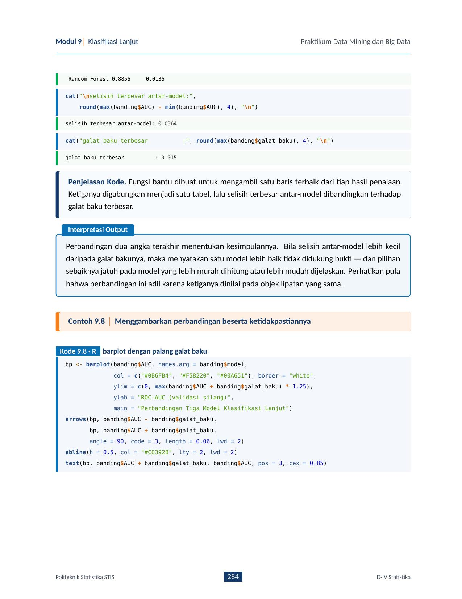
3. Mengapa Random Forest Mengungguli Pohon Tunggal?
- Keacakan Sampel: Tiap pohon dilatih pada sampel bootstrap berukuran $N$ (dengan pengembalian). Amatan yang tidak terpilih disebut Out-of-Bag (OOB) dan digunakan sebagai estimasi galat internal gratis tanpa butuh set validasi terpisah.
- Keacakan Peubah: Pada setiap titik pembelahan (split), hanya subset $m_{try} = \lfloor\sqrt{p}\rfloor$ peubah yang diizinkan bersaing. Ini mendekorelasikan pohon-pohon individual sehingga rata-rata prediksi ansambel sangat stabil.
Modul 10: Jaringan Syaraf Tiruan (FFNN & RBFNN)
Deskripsi: Jaringan Syaraf Tiruan (JST) unggul dalam menangkap hubungan non-linier kompleks dan interaksi tingkat tinggi antar-peubah, tetapi bersifat model tertutup (*black box*). Modul ini mengkaji Feed-Forward Neural Network (FFNN) dan Radial Basis Function Neural Network (RBFNN) pada data survei kerentanan pangan.
1. Arsitektur FFNN vs RBFNN
- Lapisan input $\to$ lapisan tersembunyi (hidden layer) $\to$ lapisan output.
- Fungsi aktivasi: Sigmoid logistik $\sigma(z) = \frac{1}{1 + e^{-z}}$.
- Kombinasi masukan: $z_j = \sum w_{ij} x_i + b_j$.
- Pelatihan via Backpropagation (penurunan gradien). Memperbarui seluruh bobot di semua lapisan secara iteratif. Rawan konvergensi lambat dan minimum lokal.
- Lapisan tersembunyi menggunakan fungsi basis radial (RBF) Gaussian: $$\phi_j(x) = \exp\left(-\frac{\|x - c_j\|^2}{2\sigma_j^2}\right)$$
- Pusat $c_j$ dan lebar $\sigma_j$ ditentukan terlebih dahulu (biasanya via K-Means).
- Pelatihan lapisan output dilakukan secara analitis linier (kuadrat terkecil). Jauh lebih cepat stabil dibanding FFNN!
2. Ketimpangan Kelas & Pemindahan Ambang (Threshold Moving)
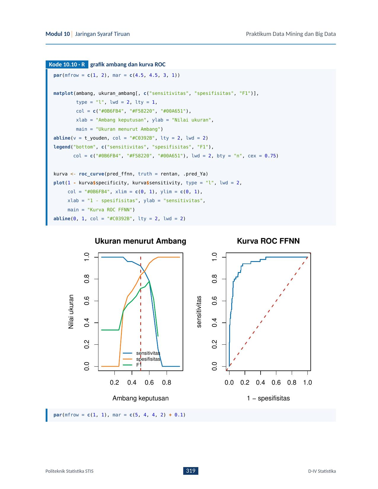
Pada data kerentanan pangan di mana hanya 10% rumah tangga berstatus rentan, ambang baku $p = 0{,}5$ menghasilkan sensitivitas yang sangat buruk. Dengan menggeser ambang keputusan (misal ke $p^* = 0{,}22$), sensitivitas deteksi meningkat drastis dengan penurunan spesifisitas yang terkendali (titik Youden $J = \text{Sens} + \text{Spec} - 1$).
3. Menafsirkan Model Tertutup (Algoritma Garson)
Tingkat kepentingan peubah pada FFNN diekstraksi menggunakan algoritma Garson, yang mengalikan bobot dari lapisan masukan ke lapisan tersembunyi dengan bobot dari lapisan tersembunyi ke lapisan keluaran, lalu menormalkannya menjadi persentase kontribusi relatif.
Modul 11: Association Rule dan Frequent Itemset Mining
Deskripsi: Beralih dari tugas supervised ke pencarian pola asosiasi antar-barang dalam data transaksi belanja (*market basket analysis*) serta keterbatasan rumah tangga (SUSENAS BPS).
1. Metrik Dasar Aturan Asosiasi ($X \Rightarrow Y$)
| Metrik | Rumus Probabilitas | Interpretasi |
|---|---|---|
| Support | $\text{Supp}(X \Rightarrow Y) = P(X \cup Y)$ | Proporsi seluruh transaksi yang memuat $X$ dan $Y$ bersamaan. |
| Confidence | $\text{Conf}(X \Rightarrow Y) = \frac{P(X \cup Y)}{P(X)} = P(Y \mid X)$ | Tingkat kepastian: jika nasabah membeli $X$, berapa peluang ia juga membeli $Y$. |
| Lift | $\text{Lift}(X \Rightarrow Y) = \frac{P(X \cup Y)}{P(X)P(Y)}$ | Kekuatan asosiasi terhadap kejadian independen acak. |
| Leverage | $\text{Supp}(X \cup Y) - \text{Supp}(X)\text{Supp}(Y)$ | Selisih frekuensi amatan dengan frekuensi harapan independen. |
| Conviction | $\frac{1 - \text{Supp}(Y)}{1 - \text{Conf}(X \Rightarrow Y)}$ | Mengukur implikasi logis kesalahan jika $Y$ tidak muncul bersama $X$. |
- $\text{Lift} > 1$: Asosiasi positif (keberadaan $X$ meningkatkan probabilitas kemunculan $Y$). Aturan ini bernilai bisnis!
- $\text{Lift} = 1$: $X$ dan $Y$ independen (kemunculan bersama murni kebetulan acak).
- $\text{Lift} < 1$: Asosiasi negatif (pembelian $X$ justru menekan kemungkinan pembelian $Y$).
2. Sifat Anti-Monoton Apriori, Closed, dan Maximal Itemset
- Sifat Apriori: "Jika suatu himpunan item bersifat tidak sering (infrequent), maka seluruh superset-nya dipastikan tidak sering." Sifat ini memangkas ruang pencarian eksponensial.
- Frequent Itemset: Itemset dengan $\text{support} \ge \text{minsup}$.
- Closed Itemset: Frequent itemset yang tidak memiliki *superset langsung* dengan nilai support yang persis sama. Memadatkan aturan tanpa kehilangan informasi nilai support.
- Maximal Itemset: Frequent itemset yang tidak memiliki *superset* mana pun yang juga frequent. Bentuk pemadatan paling ringkas.
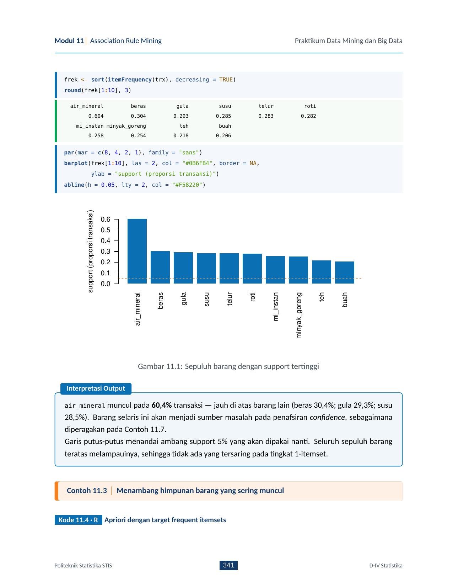
itemFrequencyPlot.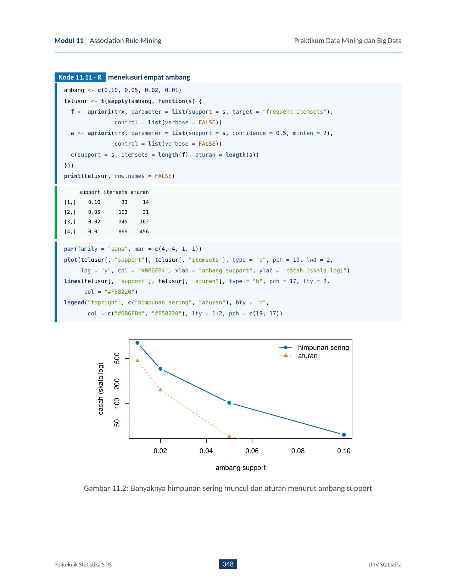
Modul 12: Pengelompokan (k-Medoid, k-Prototype, DBSCAN, OPTICS, Bi-clustering)
Deskripsi: Modul pengelompokan tingkat lanjut yang mengatasi berbagai kelemahan K-Means klasik: ketahanan terhadap outlier (PAM), data bertipe campuran (k-Prototype), bentuk gugus non-sferis & derau (DBSCAN), kepadatan bertingkat (OPTICS), dan pengelompokan simultan baris-kolom pada dimensi tinggi (Bi-clustering).
1. Ringkasan Metode Klaster Lanjut
| Metode | Tipe Data & Karakteristik | Kelebihan Utama | Fungsi Paket R |
|---|---|---|---|
| k-Medoid (PAM) | Numerik/Kategorik (Jarak Gower/Manhattan) | Pusat adalah titik data asli; tahan outlier | cluster::pam() |
| k-Prototype | Campuran numerik & kategorik berbobot $\gamma$ | Menggabungkan K-Means & K-Modes tanpa one-hot | clustMixType::kproto() |
| DBSCAN | Spasial numerik berbasis kerapatan $(\varepsilon, \text{MinPts})$ | Bentuk bebas (spiral/cincin), otomatis buang noise | dbscan::dbscan() |
| OPTICS | Kerapatan bervariasi; menghasilkan *ordering* | Menemukan hierarki kluster tanpa kunci $\varepsilon$ global | dbscan::optics() |
| Bi-clustering | Matriks dimensi tinggi (ekspresi gen, profil wilayah) | Klasterisasi simultan baris dan kolom | biclust::biclust() |
2. Visualisasi Kepadatan: DBSCAN vs OPTICS
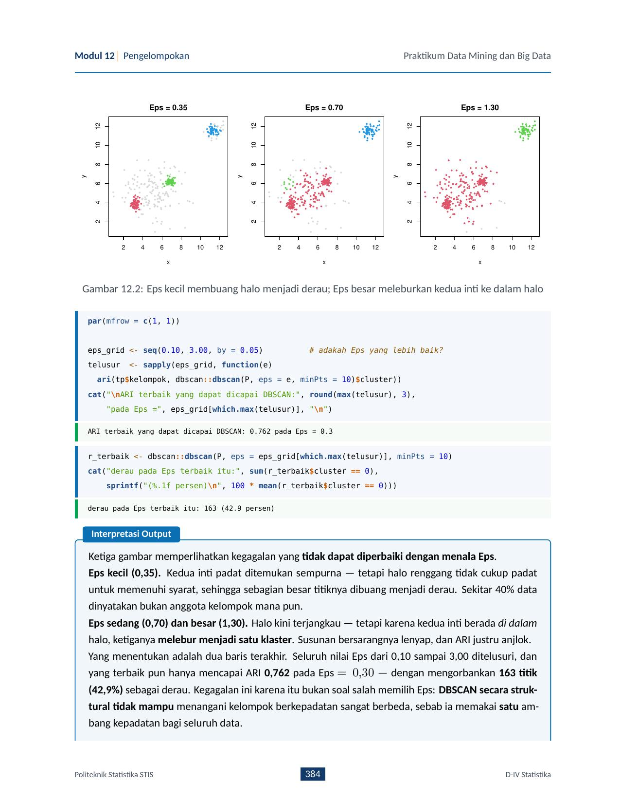
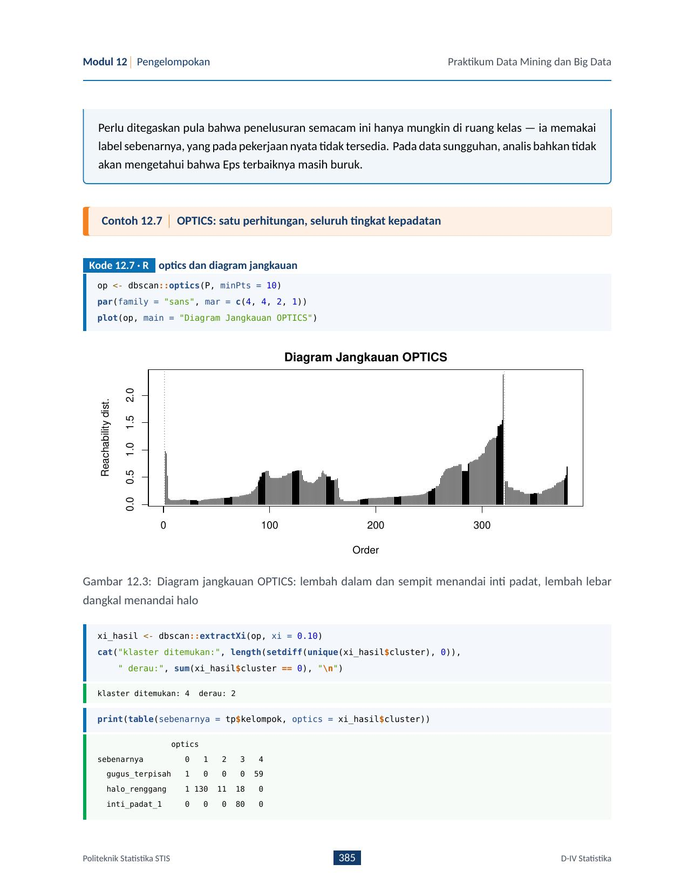
3. Bi-clustering: Algoritma Cheng & Church (2000)
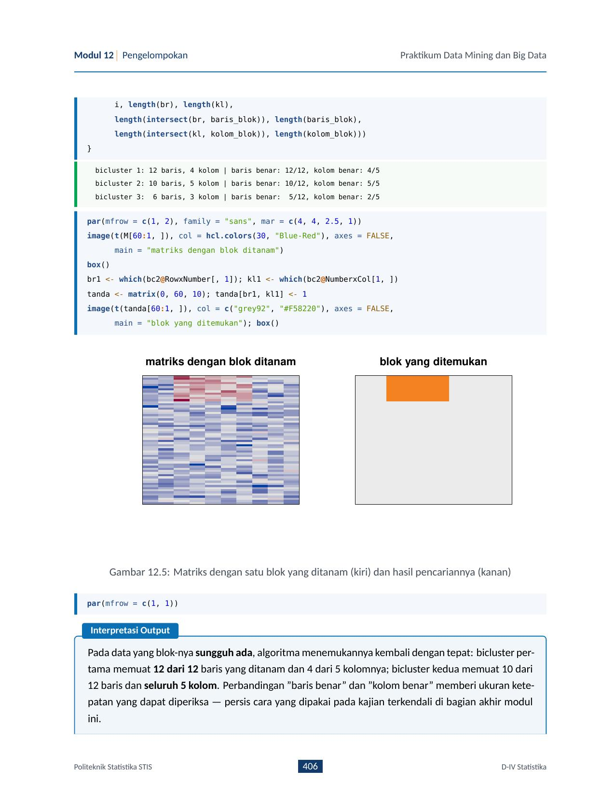
Modul 13: GPBoost: Boosting untuk Data Bertingkat (R dan Python)
Deskripsi: Mengatasi pelanggaran asumsi independensi observasi (iid) pada data statistik resmi bersarang (misal data rumah tangga yang berkelompok dalam wilayah/desa). Modul ini menggabungkan Tree-Boosting (menangkap hubungan efek tetap non-linier rumit) dengan Linear Mixed Models / Gaussian Process (menangkap korelasi acak antar wilayah).
1. Masalah Data Bertingkat & Koefisien Korelasi Intrakelas (ICC)
Ketika amatan dalam suatu wilayah cenderung lebih mirip satu sama lain dibanding antar-wilayah, variansi total terbagi menjadi variansi antar-wilayah ($\sigma_b^2$) dan variansi dalam-wilayah ($\sigma_\varepsilon^2$). $$\text{ICC} = \frac{\sigma_b^2}{\sigma_b^2 + \sigma_\varepsilon^2}$$ Jika $\text{ICC} > 0{,}05$, penggunaan regresi OLS atau boosting biasa akan menghasilkan standar error yang terlalu kecil (overkonfiden) dan estimasi bias!
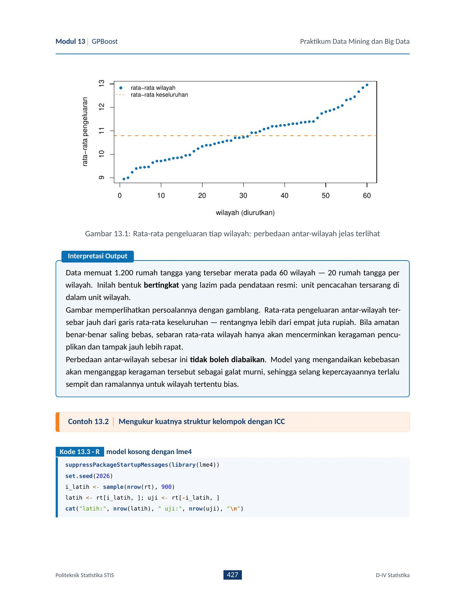
2. Struktur Matematis GPBoost
- $F(X)$: Fungsi non-linier ensemble pohon (ditaksir via Gradient Tree-Boosting).
- $Z b$: Efek acak bertingkat (ditaksir via Generalized Least Squares / REML).
- Algoritma memperbarui pohon dan parameter variansi $\sigma_b^2, \sigma_\varepsilon^2$ secara berselang-seling (alternating optimization).
3. Sintaks Praktikum di R & Python
# Di R menggunakan paket gpboost
library(gpboost)
gp_model <- GPModel(group_data = data$kode_wilayah, likelihood = "gaussian")
bst <- gpboost(data = X, label = y, gp_model = gp_model, nrounds = 100,
learning_rate = 0.05, max_depth = 4, verbose = 0)
# Di Python menggunakan library gpboost
import gpboost as gpb
gp_model = gpb.GPModel(group_data=df['kode_wilayah'])
dataset = gpb.Dataset(X, y)
params = {'learning_rate': 0.05, 'max_depth': 4, 'verbose': 0}
bst = gpb.train(params=params, train_set=dataset, gp_model=gp_model, num_boost_round=100)Modul 14: Alur Kerja Pengelompokan, CLARA / CLARANS, & Kajian Terkendali
Deskripsi: Menyusun alur kerja pengelompokan yang sah dari hulu ke hilir untuk data skala besar, memperkenalkan varian K-Medoid untuk Big Data (CLARA dan CLARANS), serta melakukan studi perbandingan terkendali antar-keluarga metode.
1. Enam Tahap Alur Kerja Pengelompokan Lengkap
- Tahap 1: Evaluasi Kecenderungan Berklaster: Menguji statistik Hopkins ($H > 0{,}75$) dan visualisasi VAT heatmap sebelum menjalankan algoritma apa pun.
- Tahap 2: Prapemrosesan: Pembakuan skala (Z-score), penanganan pencilan, atau PCA jika peubah berkorelasi kuat.
- Tahap 3 & 4: Pemilihan Jarak & Metode: Menentukan ukuran jarak (Euclid, Manhattan, Gower) dan algoritma yang sesuai bentuk struktur data.
- Tahap 5: Penentuan Banyaknya Klaster & Validasi: Elbow WSS, Silhouette, Dunn Index, atau Gap Statistic.
- Tahap 6: Profiling Karakteristik: Menyajikan profil rata-rata tiap klaster untuk menjawab persoalan substantif.
2. Mengapa Butuh CLARA & CLARANS untuk Big Data?
Algoritma PAM murni memiliki kompleksitas waktu $O(k(n-k)^2)$. Untuk $n = 50.000$, PAM membutuhkan miliaran perbandingan jarak sehingga gagal beroperasi.
- CLARA (Clustering Large Applications): Mengambil sampel acak berulang berukuran $40 + 2k$ (biasanya 5 replikasi), menerapkan PAM pada sampel untuk mencari medoid terbaik, lalu memetakan seluruh data $n$ ke medoid terpilih. Kompleksitas turun menjadi $O(k s^2 + k(n-k))$.
- CLARANS: Memperlakukan pencarian medoid sebagai penelusuran graf acak dengan batasan tetangga maksimal (cocok untuk data spasial multidimensi).
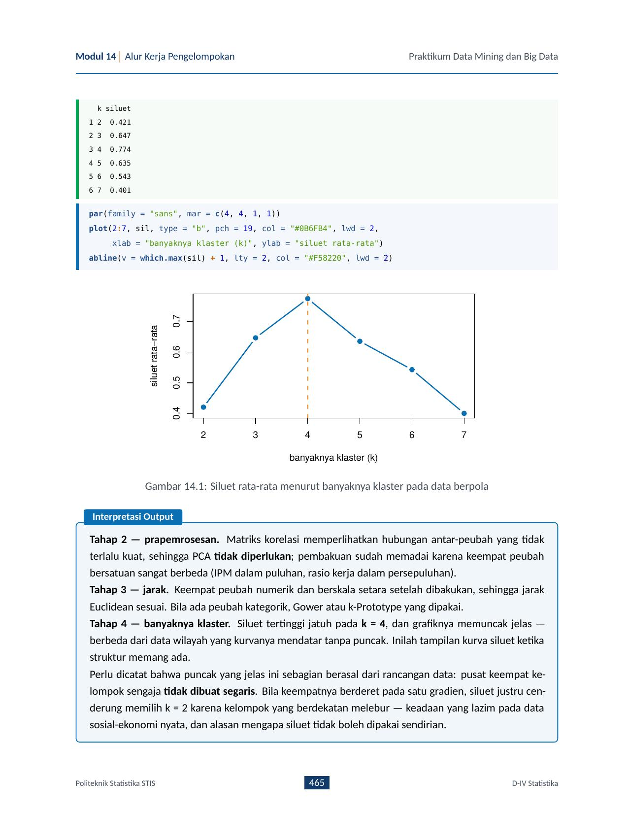
Modul 15: LightGBM: Gradient Boosting Cepat (R dan Python)
Deskripsi: Dirancang oleh Microsoft (Ke et al., 2017) untuk menaklukkan keterbatasan kecepatan dan memori XGBoost pada data raksasa, peubah kategorik berkardinalitas tinggi (seperti kode wilayah 500+ kabupaten), dan target tidak seimbang.
1. Tiga Gagasan Revolusioner LightGBM
2. Pertumbuhan Pohon: Leaf-Wise vs Level-Wise
Berbeda dari model pohon kebanyakan yang membelah seluruh cabang pada tingkat kedalaman yang sama (level-wise), LightGBM menggunakan strategi Leaf-Wise (Best-First): membelah daun yang menghasilkan penurunan kerugian (loss) terbesar. Strategi ini jauh lebih akurat dan konvergen lebih cepat, tetapi rawan overfit jika ukuran max_depth atau num_leaves tidak dibatasi!
3. Parameter Kunci Penalaan (Hyperparameters)
num_leaves: Jumlah daun maksimal (aturan umum: $\text{num\_leaves} < 2^{\text{max\_depth}}$).min_data_in_leaf: Jumlah amatan minimum per daun untuk mencegah menghafal noise.learning_rate: Laju pembelajaran gradien (0.01 – 0.1).is_unbalance = TRUEatauscale_pos_weight: Penyeimbang kelas target langka.
Modul 16: LSTM: Jaringan Berulang untuk Deret Waktu (R dan Python)
Deskripsi: Data statistik resmi seperti produksi beras bulanan, indeks harga, atau kunjungan wisman memiliki urutan temporal kritis. Modul ini mengkaji perlakuan khusus deret waktu, pembentukan jendela berurutan (*sliding window*), dan arsitektur sel Long Short-Term Memory (LSTM) untuk menangkap dependensi jangka panjang.
1. Pelanggaran Asumsi Acak: Mengapa Split Wajib Kronologis?
2. Tiga Gerbang Utama Sel LSTM (Hochreiter & Schmidhuber, 1997)
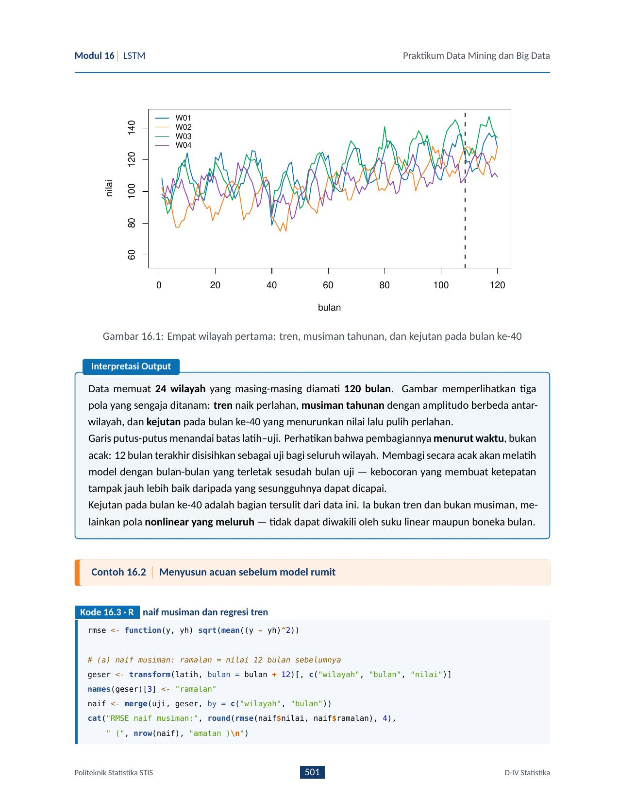
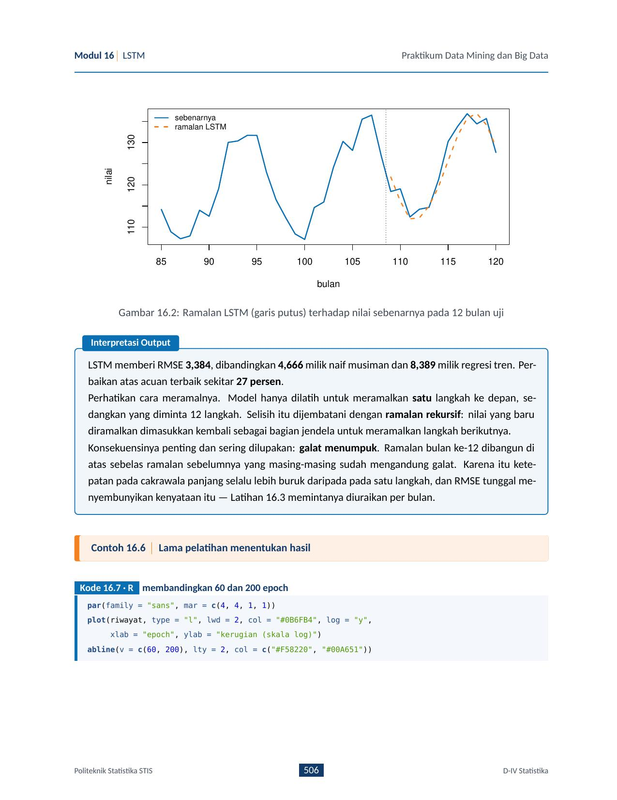
3. Kapan LSTM Sepadan dengan Biaya Komputasinya?
- LSTM Unggul: Ketika deret waktu sangat non-linier, memiliki rezim ganda (*regime change*), multi-peubah (*multivariate*), atau berupa panel multi-wilayah besar dengan interaksi silang.
- Gunakan Model Klasik (ARIMA / ETS): Jika deret tunggal, linier, pendek ($< 100$ titik), dan stasioner. Memaksakan LSTM pada deret pendek hanya akan menyebabkan *overfitting* parah.